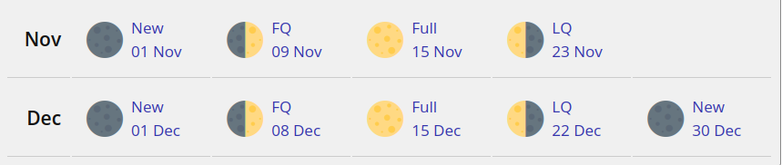
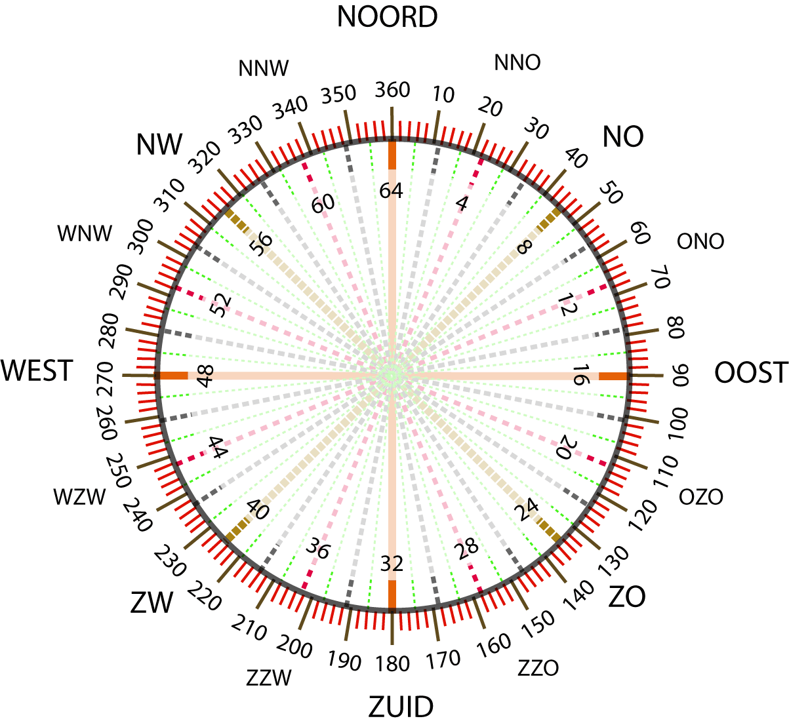
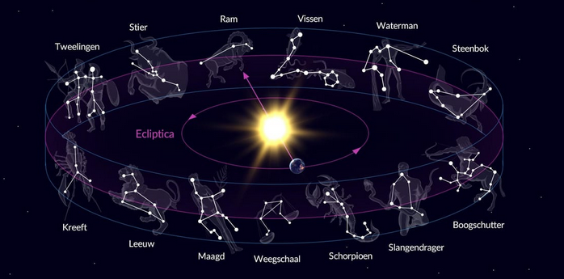

| 0 | N | noord |
|---|---|---|
| 11¼ | NtO | noord ten oosten |
| 22½ | NNO | noordnoordoost |
| 33¾ | NOtN | noordoost ten noorden |
| 45 | NO | noordoost |
| 56¼ | NOtO | noordoost ten oosten |
| 67½ | ONO | oostnoordoost |
| 78¾ | OtN | oost ten noorden |
| 90 | O | oost |
| 101¼ | OtZ | oost ten zuiden |
| 112½ | OZO | oostzuidoost |
| 123¾ | ZOtO | zuidoost ten oosten |
| 135 | ZO | zuidoost |
| 146¼ | ZOtZ | zuidoost ten zuiden |
| 157½ | ZZO | zuidzuidoost |
| 168¾ | ZtO | zuid ten oosten |
| 180 | Z | zuid |
| 191¼ | ZtW | zuid ten westen |
| 202½ | ZZW | zuidzuidwest |
| 213¾ | ZWtZ | zuidwest ten zuiden |
| 225 | ZW | zuidwest |
| 236¼ | ZWtW | zuidwest ten westen |
| 247½ | WZW | westzuidwest |
| 258¾ | WtZ | west ten zuiden |
| 270 | W | west |
| 281¼ | WtN | west ten noorden |
| 292½ | WNW | westnoordwest |
| 303¾ | NWtW | noordwest ten westen |
| 315 | NW | noordwest |
| 326¼ | NWtN | noordwest ten noorden |
| 337½ | NNW | noordnoordwest |
| 348¾ | NtW | noord ten westen |
| 360 | N | noord |
≈ (0.96 to 1) × maximum elongation of Venus ( 45 to 47° )
http://artsandstars.ens-lyon.fr/venus/mathematics
https://endeavour.astronexus.com/endv.php
https://en.wikipedia.org/wiki/Madonna_of_the_Carnation
https://nl.wikipedia.org/wiki/Ecliptica_(astronomie)
De helling van de Venus-loopbaan in het vlak van de ecliptica is ongeveer 3° 24'.
https://www.aeronomie.be/nl/encyclopedie/venus-tegengestelde-rotatie-en-orbitale-periode
https://en.wikipedia.org/wiki/Chirality

| windstreek | graden | mil (1/6400) |
|---|---|---|
| Noord | 0° | 0 |
| Oost | 90° | 1600 |
| Zuid | 180° | 3200 |
| West | 270° | 4800 |